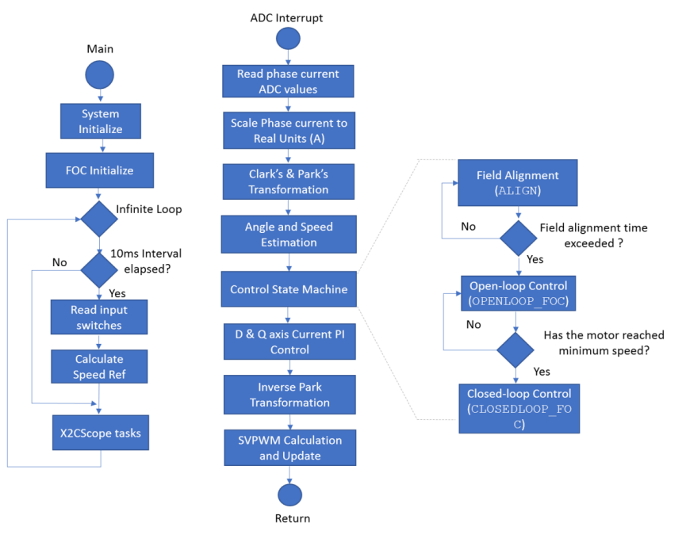
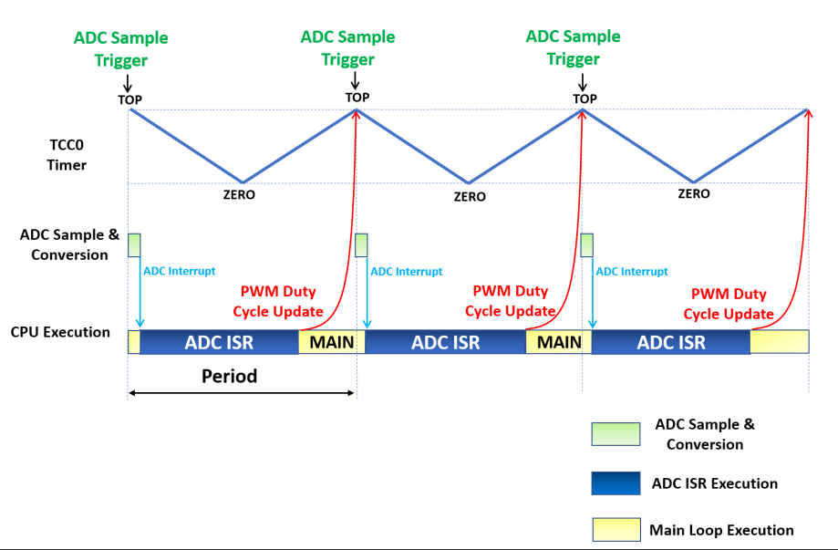

This application implements sensorless field oriented control (FOC) of permanent magnet synchronous motor (PMSM). It estimates rotor position from measured phase currents and a PLL based estimator. The algorithm is implemented on the  ATSAME54P20A MCU. For more details about PLL Estimator, refer to Application Note AN2520. The following section briefly describes the PLL Estimator based sensorless FOC algorithm, software design and implementation.
ATSAME54P20A MCU. For more details about PLL Estimator, refer to Application Note AN2520. The following section briefly describes the PLL Estimator based sensorless FOC algorithm, software design and implementation.
Field Oriented Control is the technique used to achieve the decoupled control of torque and flux. This is done by transforming the stator current quantities (phase currents) from stationary reference frame to torque and flux producing current components in rotating reference frame using mathematical transformations. The Field Oriented Control is implemented as follows:
- Measure the motor phase currents.
- Transform the three phase currents from three phase stationary reference frame (u,v,w) into two phase stationary reference frame (alpha, beta) using the Clarke transformation.
- Estimate (sensorless) or measure (sensored) the rotor position angle.
- Transform the stator currents from a two phase stationary reference frame (alpha, beta) into a two phase rotating reference frame (d,q) using the Park transformation. The rotating reference frame rotates synchronously with the rotor axis and therefore requires rotor angle information.
- Clarke and Park transformation allows the transformation of three phase AC stator currents into an equivalent two phase DC currents which decouples the flux (id) and torque (iq) producing components of the stator currents.
- The stator current torque (iq) and flux (id) producing components are regulated independently by two independent PI controllers. These PI controllers generate an output voltage reference in d,q reference frame which is transformed into three phase stationary frame AC voltages using the inverse park and inverse clarke transformations.
- In order to increase the DC bus utilization, the three phase sinusoidal AC output voltages are translated into space vector modulated voltages and applied across the stator windings using a Three Phase Half-Bridge Inverter.
The phase currents are measured using two shunt resistors connected to Phase U and Phase V inverter legs respectively. The W phase current is determined based on Kirchoff's current law.
The electrical rotor position is derived from back EMF voltage estimated by PLL Estimator which is implemented in mcLib_PLLEstimator function. Back EMF voltage is a function of rotor speed. At lower rotor speeds, the estimated back EMF has poor signal to noise ratio and as a result does not provide accurate rotor angle estimation. Therefore, the FOC algorithm also integrates an open loop ramp-up profile for motor startup. The reference speed is incremented linearly until the required minimum reference speed is achieved such that the estimated back EMF has a high enough signal to noise ratio for accurate rotor angle estimation, at which point the algorithm uses estimated rotor angle for further control.
The following block diagram shows the software realization of the FOC algorithm.

Software Design:
The following figure shows the flow chart of the implemented algorithm:

Windmilling Detect - WINDMILLING:
In this state, the algorithm detects if the motor shaft is "Windmilling" or freewheeling due to stored momentum or external force and estimates the rotor angle, speed and direction of the windmilling motor. The length of duration of this state is defined by the macro WINDMILLING_TIME_SEC.
Windmilling Decide - WINDMILLING_DECIDE:
In this state, the algorithm makes determination of the further action based on information obtained from Windmilling Detect state.
- If the detected windmilling speed is greater than the "minimum windmilling speed" and if the direction of the windmilling motor is same as the "command" direction, the algorithm switches to "Closed Loop Control" state.
- If the detected windmilling speed is greater than the "minimum windmilling speed" but the direction of the windmilling motor is opposite to that of the "command" direction, the algorithm brakes the motor using active or regenerative braking. Once the speed of the windmilling motor drops below the minimum windmilling speed, the algorithm applies a passive brake by short circuiting all three phase windings to bring the motor to a halt. Once the motor is halted, the algorithm switches to "Field Alignment" state.
- If the detected windmilling speed is less than the "minimum windmilling speed", the algorithm applies a passive brake by short circuiting all three phase windings to bring the motor to a halt. Once the motor is halted, the algorithm switches to "Field Alignment" state.
- "Minimum Windmilling Speed" in RPM is defined by the macro MIN_WM_SPEED_RPM.
- "Maximum Regenerative Braking Current" in amperes (A) is defined by the macro RGN_BRK_CUR_AMP.
- Duration of the "Passive Braking" in seconds (s) is defined by the macro PASSIVE_BRAKING_TIME_SEC.
Windmilling Passive Brake - WINDMILLING_PASSIVE_BRAKE:
In this state, the algorithm asserts NULL vector for a duration defined by the macro PASSIVE_BRAKING_TIME_SEC. The intention of this state is to bring the motor to a complete halt once the motor speed is less than MIN_WM_SPEED_RPM. At the end of this state, the algorithm attempts to start the motor in the commanded direction using the standard start up method i.e. Align -> Open Loop FOC -> Closed Loop FOC.
Field Alignment - ALIGN:
In this mode, a pre-defined value of the current is asserted across the Q axis of the rotor for a pre-defined length of time, in order to align the rotor to a known angle of 90 electrical degrees. The magnitude of the current and the length of the time for which it is applied depends upon the electrical and mechanical time constant of the PMSM motor drive. Electrical time constant of the motor is a function of R and L values of the motor windings, whereas the mechanical time constant of the motor drive is primarily a function of the static load on the motor shaft.
Open Loop Control - OPENLOOP_FOC:
In this mode, the speed of the PMSM motor is gradually ramped up using an open loop control. During this mode, the rotor angle is derived from the asserted open loop speed reference. This derived rotor angle would be lagging from the actual rotor angle. The speed is ramped up linearly to a minimum value required for the PLL estimator to estimate the electrical speed of the PMSM motor with sufficient accuracy. Rotor angle information is obtained by integrating the estimated electrical speed of the motor.
Close Loop Control - CLOSEDLOOP_FOC:
In this mode, the estimated rotor angle obtained from PLL-based estimator is used to perform field oriented control of the PMSM motor.
Timing Diagram:
The three critical blocks of the MCU which are involved in the motor control operations are:
- ADC - It measures motor phase currents at the start of the PWM cycle.
- CPU - Based on motor phase currents measurements, the CPU executes the control algorithm to calculate the PWM duty cycle needed to apply required voltage across motor windings.
- TCC0 - It generates the PWM signals needed to apply required voltage across motor windings.
The following timing diagram, shows the chronological role played by the ADC, CPU and TCC0 in the execution of FOC algorithm.

The FOC algorithm is used across different application fields. In order to get the optimal control of the PMSM motor, the motor specific parameters, board specific parameters and application parameter macros have to be updated in the software. The following section describes how to update both motor and application specific parameters in the the project. These parameter macros can be found in userparams.h header file which can be found under logical path: Header Files > config > <config_name> >userparams.h in MPLABX IDE.

1. Setting PWM Frequency and delay loop interval:
Set the following PWM frequency and delay loop interval specific parameters in the userparams.h file.
|
Macro |
Description |
|
PWM_CLK |
TCC0 peripheral clock in Hz |
|
PWM_FREQ |
PWM Frequency in Hz |
|
DELAY_MS |
Delay interval for reading switch input and calculating speed reference in milliseconds |
|
SW_DEBOUNCE_DLY_MS |
Switch debounce delay in milliseconds |
2. Setting motor specific parameters:
Set the following motor specific parameters in the userparams.h file.
|
Macro |
Description |
Units |
|
MOTOR_PER_PHASE_RESISTANCE |
Motor per phase resistance |
Ohm |
|
MOTOR_PER_PHASE_INDUCTANCE |
Motor per phase inductance |
H |
|
MOTOR_BACK_EMF_CONSTANT_Vpeak_Line_Line_KRPM_MECH |
Motor Back EMF Constant |
Vpeak(L-L)/KRPM |
|
NOPOLESPAIRS |
Number of Pole Pairs |
- |
|
STAR_CONNECTED_MOTOR |
1 : Motor is Star Connected, 0 : Motor is Delta Connected |
- |
|
NOMINAL_SPEED_RPM |
Nominal Speed of the motor (Base Speed) |
RPM |
|
FW_SPEED_RPM |
Max Speed of the motor in Flux Weakening mode |
RPM |
|
ALIGN_TIME_IN_SEC |
Motor Alignment duration |
seconds |
|
OPENLOOP_RAMP_TIME_IN_SEC |
Ramp time to reach from 0 to Open Loop Speed (Open Loop FOC duration) |
seconds |
|
OPENLOOP_END_SPEED_RPM |
Motor speed at which the algorithm switches from open loop FOC to closed loop FOC operaton. In other words, maximum open loop speed |
RPM |
|
CLOSEDLOOP_RAMP_RATE_RPM_SEC |
Speed ramp rate in closed loop FOC mode |
RPM/sec |
|
ALIGN_Q_CURRENT_REF |
Q axis current reference during "alignment" mode |
A |
|
OPENLOOP_Q_CURRENT_REF |
Q axis current reference during "open loop FOC" mode |
A |
|
MAX_FW_NEGATIVE_ID_REF |
Maximum negative D axis reference current during Flux Weakening |
A |
|
TORQUE_MODE_MAX_CUR |
Maximum Torque Mode Current Reference |
A |
|
MAX_MOTOR_CURRENT |
Maximum Motor Current |
A |
3. Setting Windmilling specific parameters
|
Macro |
Description |
Units |
|
WINDMILL_TIME_SEC |
Time Duration of Windmilling state |
seconds |
|
WINDMILL_START_Q_AXIS_REF |
Initial Q axis current reference when the algorithm switches from Windmilling state to Closed Loop Control state |
A |
|
REGEN_BRAKE_CURRENT_REF |
Magnitude of Q axis braking current reference applied during regenerative braking |
A |
|
REGEN_BRAKE_CURRENT_RAMP_TIME_SEC |
Ramp time of regenerative braking from 0 to REGEN_BRAKE_CURRENT_REF |
seconds |
|
PASSIVE_BRAKE_TIME_IN_SEC |
Time Duration of Passive Braking state |
seconds |
|
MIN_WM_SPEED_IN_RPM |
Minimum Windmilling Speed |
RPM |
4. Setting board specific parameters:
Set the following board specific parameters in the userparams.h file.
|
Macro |
Description |
Units |
|
MAX_BOARD_CURRENT |
Maximum measurable current by ADC without saturating |
A |
|
DCBUS_SENSE_TOP_RESISTOR |
DC Bus voltage Divider - Top Side Resistor |
Kohm |
|
DCBUS_SENSE_BOTTOM_RESISTOR |
DC Bus voltage Divider - Bottom Side Resistor |
Kohm |
5. Setting PI Controller parameters:
Depending on the type of motor used, and the corresponding application PI controller parameters should be updated in the userparams.h file.
Speed PI controller gains:
|
Macro |
Description |
|
SPEEDCNTR_PTERM |
Proportional gain of speed controller |
|
SPEEDCNTR_ITERM |
Integral gain of speed controller |
|
SPEEDCNTR_CTERM |
Anit-windup gain of speed controller |
|
SPEEDCNTR_OUTMAX |
Speed Loop PI Controller Maximum Output - Max Q axis Current Reference in A |
Current PI controller gains for D axis:
|
Macro |
Description |
|
D_CURRCNTR_PTERM |
Proportional gain for D axis current controller |
|
D_CURRCNTR_ITERM |
Integral gain for D axis current controller |
|
D_CURRCNTR_CTERM |
Anti-windup gain for D axis current controller |
|
D_CURRCNTR_OUTMAX |
D axis PI Controller Maximum Output - Max D axis Voltage (Normalized) |
Current PI controller gains for Q axis:
|
Macro |
Description |
|
Q_CURRCNTR_PTERM |
Proportional gain for Q axis current controller |
|
Q_CURRCNTR_ITERM |
Integral gain for Q axis current controller |
|
Q_CURRCNTR_CTERM |
Anti-windup gain for Q axis current controller |
|
Q_CURRCNTR_OUTMAX |
Q axis PI Controller Maximum Output - Max Q axis Voltage (Normalized) |
6. PLL Estimator Parameters:
Set the following PLL Estimator specific parameters in the userparams.h file.
|
Macro |
Description |
|
KFILTER_ESDQ |
D, Q axis Back EMF Low Pass Filter Coefficient - Cut off frequency of the filter is proportional to the filter coefficient |
|
KFILTER_VELESTIM |
PLL Estimator Speed Filter Coefficient - Cut off frequency of the filter is proportional to the filter coefficient |
|
KFILTER_IDREF |
D axis Current Reference Filter in Flux Weakening mode - Cut off frequency of the filter is proportional to the filter coefficient |
7. Operating Modes :
This example provides compile time re-configuration options using #define macro directives to enable or disable different operating modes. These macro directives can be accessed in the userparams.h header file.
- Current PI Tuning - CURPI_TUN
- This mode allows tuning of the Current PI controllers. This mode generates a step current reference and depending upon the actual current response, user can accordingly adjust current PI gains
- This mode can be enabled by defining the macro CURPI_TUN in userparams.h header file
- In this mode, the step current reference is asserted across the D axis
- Macro CUR_STEP_AMP defines the step size of the asserted D axis current reference in amperes and macro CUR_STEP_TIM defines the length of the step in seconds
- Open Loop Mode - OPEN_LOOP_FUNCTIONING
- This mode is used to debug the open loop startup of the motor. This mode could also be used in tuning of Current PI controllers.
- In this mode, the motor operates in open loop rotor angle mode. In other words, the rotor angle used by the algorithm to assert current will be different than actual rotor angle and therefore, the asserted current may not be orthogonal to the rotor magnetic axis, resulting in lower torque generation.
- This mode can be enabled by defining the macro OPEN_LOOP_FUNCTIONING in userparams.h header file.
- The torque current reference in this mode is defined by the macro OPENLOOP_Q_CURRENT_REF.
- Depending upon the load inertia and startup acceleration time (OPENLOOP_RAMP_TIME_IN_SEC), if the generated torque is not sufficient, then it may result in stalling of the motor.
- OPENLOOP_Q_CURRENT_REF and OPENLOOP_RAMP_TIME_IN_SEC need to be modified to ensure that the motor starts up successfully in open loop mode without stalling.
- Torque Mode - TORQUE_MODE
- In this mode, as the name suggests, the algorithm operates in torque mode. The torque reference is obtained from the potentiometer.
- This mode can be enabled by defining the macro TORQUE_MODE in userparams.h header file.
- The potentiometer min - max input is scaled to generate torque current reference in the range of 0 - TORQUE_MODE_MAX_CUR.
- Depending upon the load, if the torque is too low then it could cause the motor to stall.
- Flux Weakening - ENABLE_FLUX_WEAKENING
- Defining this macro, allows the motor to enter "flux weakening" mode thereby allowing the motor to exceed its base speed
- Maximum speed in flux weakening mode is set by FW_SPEED_RPM
- Maximum D axis current reference in flux weakening mode is set by MAX_FW_NEGATIVE_ID_REF
- Note: In flux weakening mode, the motor cannot provide constant torque which could cause the motor to stall. Additionally, operating motor in flux weakening mode for prolonged duration may result in demagnetization of the permanent magnets of the PMSM.
- Windmilling - ENABLE_WINDMILLING
- Defining this macro, enables the WINDMILLING feature of this algorithm.
|
Microchip 32-bit Motor Control
|